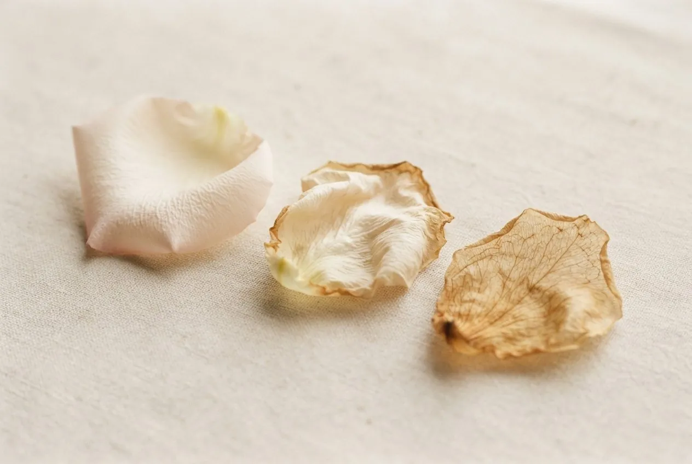

Philosophy
how healing happens here
“A healer does not heal you. A healer is someone who holds space for you while you awaken your inner healer, so that you may heal yourself.”Maryam Hasnaa
Heal from the roots, not the surface
By Péter Frák · updated
Through the course of my holistic studies, as well as through the illnesses I've experienced in my life, it's become abundantly clear to me that all bodily disharmonies need to be examined and treated not just on the physical, but also on the emotional, energetic and psychic levels. I strongly believe taking a pill will not eliminate a disease fully. Instead it is necessary to weed out an illness from its roots in the mind and soul, so it won't manifest in another form. Changing one's lifestyle, behaviours and old counterproductive habits is necessary in this process.
Our anomalies, weaknesses and physical imbalances should be searched for in our minds, digestive tracts and emotional worlds all at the same time. And in every case we have to examine the extraordinary connection between our nervous and digestive systems, while diving deep into the dimensions of our souls.
“All disease begins in the gut.” Hippocrates
Every person is unique
During my twenties I tried a lot of different holistic methods and visited a wide range of therapists. I learned from this journey that not every holistic healing method will help each individual the same way it may help others. We are all unique creatures, and as such, the healing process should also be uniquely personalised to each person's needs.
Moreover, as the seasons change during the year, so do we constantly change in our lives. It is quite possible that a method that did not work before may prove beneficial under new circumstances.
It is never a certain bet that one person will benefit from the same diet, massage or medicine that has helped another heal, as our physical and mental constitutions are each so different. Complete examination is, thus, always a must.
Presence over certificates
I believe the greatness of a therapist lies not in certificates hanging on a wall, but in the fact that as soon as the patient sits down, the therapist is present, is interested, reads between the lines, connects with the person, is open-minded, is humble, and ultimately radiates peace. I believe a successful therapist is one that listens carefully, willing to look at each person's case from different perspectives with an open heart and a bright mind.
Symptoms are teachers
I believe all diseases and physical symptoms are teachings. They teach us to become more self-aware, and encourage us to pay attention to ourselves, to care for our precious bodies. The body-mind is sophisticated and intelligent enough to send us warning signals in case of imbalance. But to be able to read those signs requires mindfulness and awareness. Holistic techniques provide a broad spectrum of solutions to maintain health and harmony, so we can prevent unnecessary aggravation of disease.
The Dalai Lama, asked what surprised him most about humanity
“Man. Because he sacrifices his health in order to make money. Then he sacrifices money to recuperate his health. And then he is so anxious about the future that he does not enjoy the present; the result being that he does not live in the present or the future; he lives as if he is never going to die, and then dies having never really lived.”
The healing power of loving touch
A proper diet, daily exercise, self-care, good sleep, prayer, meditation, a healthy intimate life, and reconnection to Mother Nature are all necessary to one's good health. But to take it further, I believe nowadays it is ever more important to recognise the healing power of a loving touch. We are losing the connection to one another. We humans are social creatures, and therefore we naturally need a daily dose of loving, supportive hugs: gentle, caring touches.
Being able to use the vibration of love is the most precious healing tool I feel I have received from the Universe. All of my experiences have proven to me that love is the greatest healer. It can move mountains in the soul, switch on the self-healing mechanism of the body, and clear all the dark clouds from the mind.
My goal is to make my patients feel valuable and loved through my treatments, as well as safe within the space that I hold for them. I truly seek for them to explore all the magic that exists within them.
I wish you a beautiful healing journey.
Péter Frák
“Nature is our Mother. Because we live cut off from her, we become sick.”
Thich Nhat Hanh
Experience it in person